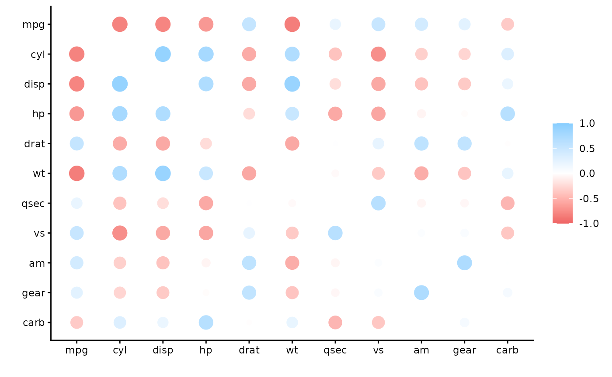

To calculate correlations with data inside databases, it is very common to import the data into R and then run the analysis. This is not a desirable path, because of the overhead created by copying the data into memory.
Taking advantage of the latest features offered by
dbplyr and rlang, it is now possible to run
the correlation calculation inside the database, thus
avoiding importing the data.
An example
A simple SQLite database will be used to this example. A temporary
database is created, and the mtcars data set is copied to
it. The db_mtcars variable is only a pointer to the new
table inside the database, it does not hold any data.
Even though it is not a formal data.frame object,
db_mtcars can be use as if it was a data.frame
and simply pipe it into the correlate() function.
The correlate() function will check the type of object
passed, if it is a database-backed table, meaning a
tbl_sql() object class, then it will use the new
tidyeval code to calculate the correlations inside the
database. The function will automatically retrieve only the results of
the operation.
library(dplyr)
library(corrr)
db_mtcars %>%
correlate(quiet = TRUE)
#> # A tibble: 11 × 12
#> term mpg cyl disp hp drat wt qsec vs
#> <chr> <dbl> <dbl> <dbl> <dbl> <dbl> <dbl> <dbl> <dbl>
#> 1 mpg NA -0.852 -0.848 -0.776 0.681 -0.868 0.419 0.664
#> 2 cyl -0.852 NA 0.902 0.832 -0.700 0.782 -0.591 -0.811
#> 3 disp -0.848 0.902 NA 0.791 -0.710 0.888 -0.434 -0.710
#> 4 hp -0.776 0.832 0.791 NA -0.449 0.659 -0.708 -0.723
#> 5 drat 0.681 -0.700 -0.710 -0.449 NA -0.712 0.0912 0.440
#> 6 wt -0.868 0.782 0.888 0.659 -0.712 NA -0.175 -0.555
#> 7 qsec 0.419 -0.591 -0.434 -0.708 0.0912 -0.175 NA 0.745
#> 8 vs 0.664 -0.811 -0.710 -0.723 0.440 -0.555 0.745 NA
#> 9 am 0.600 -0.523 -0.591 -0.243 0.713 -0.692 -0.230 0.168
#> 10 gear 0.480 -0.493 -0.556 -0.126 0.700 -0.583 -0.213 0.206
#> 11 carb -0.551 0.527 0.395 0.750 -0.0908 0.428 -0.656 -0.570
#> # ℹ 3 more variables: am <dbl>, gear <dbl>, carb <dbl>The tidyeval-based function ensures that a
cor_df object is returned, so then it can be used with
other functions in the corrr package.
db_mtcars %>%
correlate(quiet = TRUE) %>%
rplot()
#> Warning: `aes_string()` was deprecated in ggplot2 3.0.0.
#> ℹ Please use tidy evaluation idioms with `aes()`.
#> ℹ See also `vignette("ggplot2-in-packages")` for more information.
#> ℹ The deprecated feature was likely used in the corrr package.
#> Please report the issue at
#> <https://github.com/tidymodels/corrr/issues>.
#> This warning is displayed once per session.
#> Call `lifecycle::last_lifecycle_warnings()` to see where this warning
#> was generated.
sparklyr
For connections using sparklyr, corrr will
use that package function called ml_corr() to run all of
the correlations at the same time. That is all done under the hood. The
user just needs to pass a tbl_spark object to the
correlate() function, and corrr will
automatically select the right function to run.
Limitations
When using correlate() with a database-backed table,
please make sure to keep the following items in mind:
Only the pearson method is supported. It is the default method, so it is not necessary to pass it. But if a different method is chosen, then the operation will return an error.
Only pairwise complete observations are used. Meaning that the
useargument has to be set topairwise.complete.obs.The
yargument is not supported. This means that if 1-to-1 comparisons are needed, then pre-select the two variables prior passing it to thecorrelate()function.The
diagonalargument only accepts NA’s.